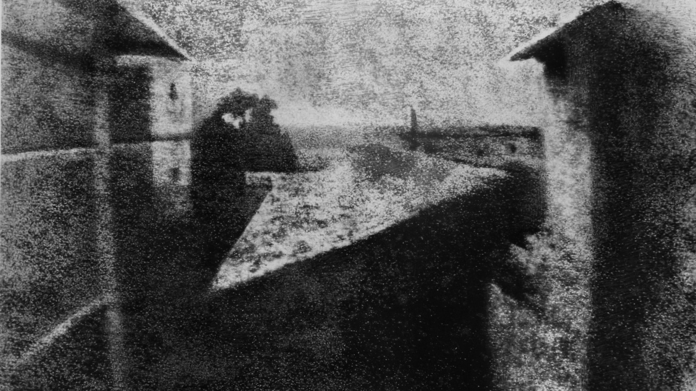
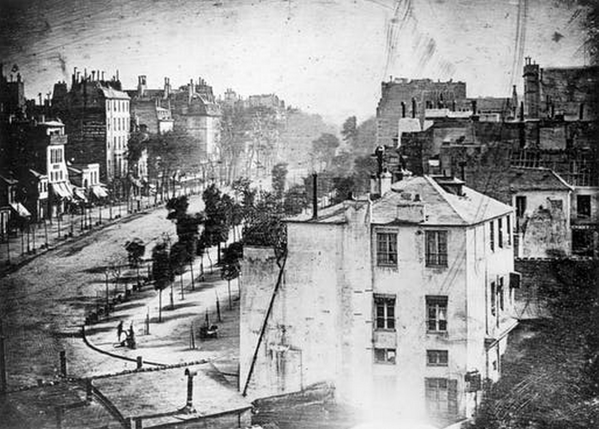
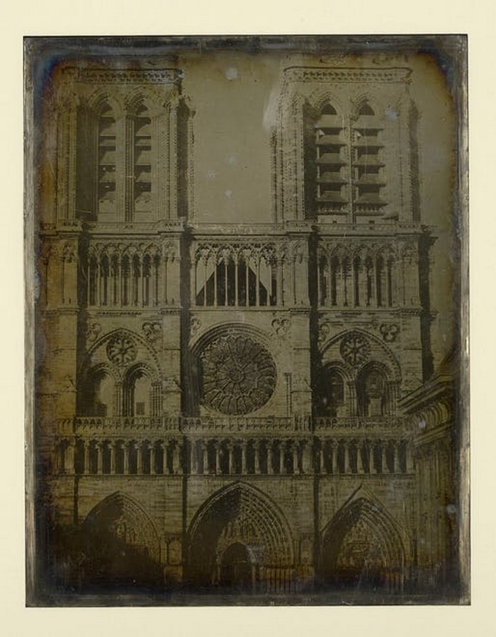
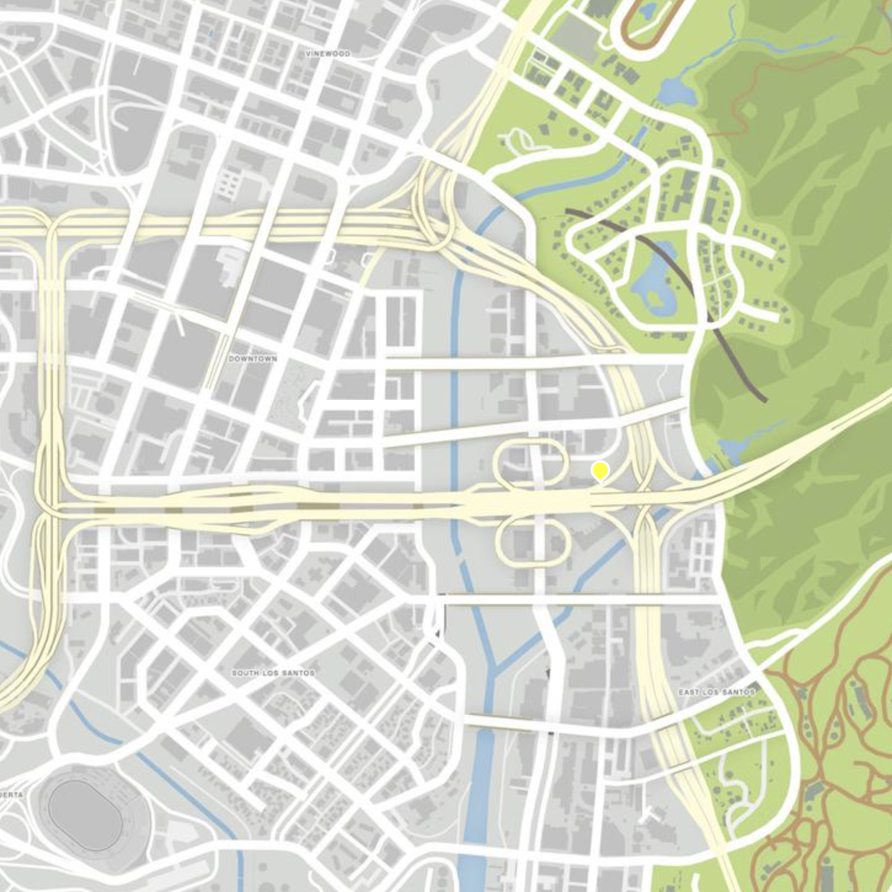

2 Architectural Photography
//general intro on architecture in game spaces, the contruction of virtual cities, architecture photography and how it relates to the game environment, the player as a photographer documenting urban spaces…
“I saw it as the end of architecture… by pushing the concept to its limit and primarily by using the photograph as a point of departure. This is reflected in the idea that the great majority of images are no longer the expression of a subject, or the reality of an object, but almost exclusively the technical fulfilment of all its intrinsic possibilities. It’s the photographic medium that does all the work. People think they’re photographing a scene, but they’re only technical operators of the device’s infinite virtuality. The virtual is the device that wants nothing more than to function, that demands to function.” – Jean Baudrillard - The Singular Objects of Architecture and Philosophy, 2000
Architecture photography was born with the invention of heliographs, daguerrotypes and large format cameras in the first half of the 19th century. Due to the long exposure times, buildings were the ideal subjects for the early scientific experiments of oseph Nicéphore Niépce, Louis-Jacques-Mandé Daguerre and William Talbot.
 View from the Window at Le Gras by Joseph Nicéphore Niépce, 1826-27
 Paris’ Boulevard du Temple by Louis-Jacques-Mandé Daguerre, 1839
While the relationship between architecture and photography has been part of the medium from its birth for technical reasons, this form of image making has evolved to visually explore the connection with material spaces and forms, as well as the relation between human perception and architectural bodies. The photographic image is not simply a document of a structure, but “is, in fact, part of its architecture”.1 Curator Urs Stahel wrote that “pictures […] offer a discourse that is unlike the physical experience of architecture. They transform volume into surface; distil matter into forms and signs. Photography shapes architecture, enlarging and reducing it, heightening and shortening it, accentuating it, yet largely leaving it to its own devices.”2
The first architectural photographer is considered to be Joseph-Philibert Girault de Prangey (1804 – 1892), who started to take daguerrotypes of iconic buildings like the Parthenon in Athens and Notre Dame in Paris from 1841. Architectural photography evolved in two distinct approaches, namely Elevation and Perspective. The Elevation Approach focuses on representing a structure as a two-dimensional image, obtaining a viewpoint that is parallel to the building and aimed at showing as many details as possible. The Perspective Approach aims at depicting the structure within the space, focusing on the third dimension and often taken at an angle or from a vantage point from a corner.
 Cathédrale Notre-Dame de Paris by Joseph-Philibert Girault Prangey, 1841
//Architecture photography and the modernist project //Modern architecture started to flourish with photographs in about the 1920s when urban photographers like Eugène Atget, Berenice Abbott, Walker Evans, and T. Lux Feiningercame into play.
//Eugène Atget(12 February 1857 – 4 August 1927), a French photographer known for his documentation of the streets of Paris before it entered Modernization. His works were published by Berenice Abbott after his death.
//Berenice Abbott(July 17, 1898 – December 9, 1991), an American Photographer is known for New York and urban design photographs in the 1930s and also for her portraits of between-the-wars 20th century cultural figures.
//“Modernist architecture and photography have been ideologically interconnected” Lorenzo Rocha //close connection between photographer and architect: //Armando Salas Portugal for Luis Barragán, //Bill Engdahl for Mies van der Rohe, //Julius Shulman for Richard Neutra
//Bernhard Becher and Hilla Becher, a German conceptual artist and photographer also known as Bernd and Hilla Becher. They worked on Duo in projects which include photography of industrial buildings and structures and they were often organized in grids. They wrote several books and their works are for public display in the Art Institute of Chicago, Chicago, Tate Gallery, London, Museum of Modern Art, New York, and several other famous museums.
//Michael Wesely, a German Architectural photographer known for his ultra-long exposure shots //Potsdamer Platz, Berlin (1997-99) by Michael Wesely
//Hélène Binet postmodern architecture
//CGI //Into the universe of rendered architectural images - Joel McKim //Rendering the Desert of The Real – Tobias Revell //The Entasis of Elon Musk – Tamar Shafrir
//Game Urbanism https://www.youandpea.com/atlas heterotopias
“We are outnumbered by virtual worlds, overwhelmed by virtual architecture. Videogames and digital art have furnished us with a hundred thousand matterless forms–landscapes where no rock or earth has ever been present, cities founded on depthless skins of image and texture, expanses that will never see the light of a true sun. And yet, somehow there is material here, a new kind of matter. Some of it is borrowed—photographs, texture references, photogrammetry. Other parts are inherent properties of digital worlds— their obsession with surface, the logic of their light, their base particles; pixels, voxels, polygons.”3
The Continuous City, by Gareth Damian Martin
 Gareth Damian Martin, Outskirts, from The Continuous City,
Gareth Damian Martin, Outskirts, from The Continuous City,
 Gareth Damian Martin, Pathways, from The Continuous City,
Gareth Damian Martin, Pathways, from The Continuous City,
artwork text
More about The Continuous City
Interview with Gareth Damian Martin
Getting there
 + The intersection of Interstate 4 and Interstate 5 manifests the architecture of traffic of the megalopolis.
Readings
[Mark D Teo, The Urban Architecture of Los Angeles and Grand Theft Auto, 2015.] (https://www.academia.edu/18173221/The_Urban_Architecture_of_Los_Angeles_and_Grand_Theft_Auto)
Luke Caspar Pearson, Sandra Youkhana, Videogame Atlas – Mapping Interactive Worlds, Thames & Hudson, 2022
Tutorial
Photographing the Game Screen
Analogue Game Photography
//Photographs of a TV screen taken with a digital camera often exhibit moiré patterns. Since both the TV screen and the digital camera use a scanning technique to produce or to capture pictures with horizontal scan lines, the conflicting sets of lines cause the moiré patterns. To avoid the effect, the digital camera can be aimed at an angle of 30 degrees to the TV screen.
Screenshotting
On windows there are several ways to take a screenshot. To capture your entire screen and automatically save the screenshot, press the Windows logo key + PrtScn key (or fn key + Windows logo key + PrtScn key). The screenshot will be saved to Pictures > Screenshots folder.
On windows 10 and 11 you can use the Game bar to take game screenshots and start/stop game screen recordings. Press the Windows logo key + G on your keyboard to open Game Bar.
Press the camera icon to take a screenshot of the game screen.
Press the circle icon to start a clip, then the square icon to stop recording the game screen.
Click on “See my captures” to access the image and video files.
Lorenzo Rocha, Photography and Modern Architecture ,“Concrete - Photography and Architecture”, Scheidegger & Spiess, 2013↩︎
Urs Stahel, Foreword to “Concrete - Photography and Architecture”, Scheidegger & Spiess, 2013↩︎
Gareth Damian Martin, Represented , Contested, Inverted, in “Heterotopias 001”, 2017↩︎